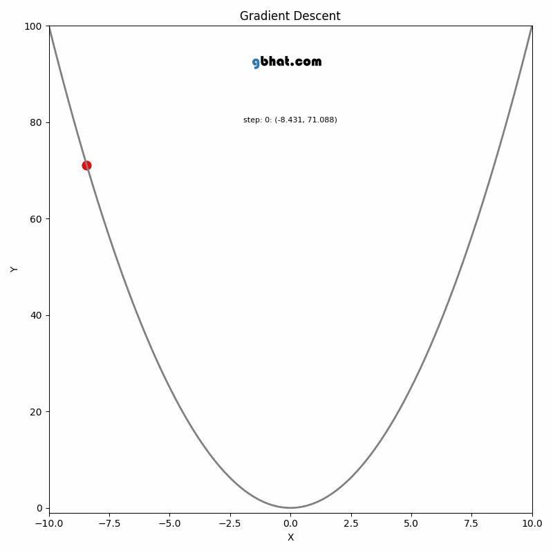

Bayesian Probabilistic Models for Classification
12 min
Tuesday, October 22, 2024
The multiple linear regression takes the form
\[
y=\beta_0+\beta_1 x_1+\beta_2 x_2+\cdots +\beta_d x_d+\xi=\vec{x}\cdot \vec{\beta}+\xi
\]
with \(\{\beta_i\}_{i=0}^{d}\in \mathbb{R}\) constants or parameters of the model. In vector notation, \(\vec{\beta}\in \mathbb{R}^{d+1}\),
\[ \vec{\beta}=\begin{pmatrix}\beta_0\\ \beta_1\\ \vdots \\ \beta_d \end{pmatrix};\hspace{4mm}\vec{x}=\begin{pmatrix}1\\ x_1\\ x_2\\ \vdots\\ x_d\end{pmatrix} \]
For \(n\) data points, in matrix algebra notation, we can write \(y=X\vec{\beta}+\xi\) where \(X\in \mathcal{M}_{n\times (d+1)}\) and \(y\in \mathbb{R}^{d+1}\) with
\[ X=\begin{pmatrix}1&x_{11}&x_{12}&\cdots&x_{1d}\\1&x_{21}&x_{22}&\cdots&x_{2d}\\ \vdots& \vdots &\vdots&\ddots &\vdots\\1&x_{n1}&x_{n2}&\cdots&x_{nd} \end{pmatrix};\hspace{4mm} y=\begin{pmatrix}y_1\\y_2\\ \vdots\\ y_n\end{pmatrix};\hspace{4mm} \xi=\begin{pmatrix}\xi_1\\ \xi_2\\ \vdots\\ \xi_n\end{pmatrix} \]
We fit the \(n\) data points with the objective to minimize the loss function, mean squared error
\[ MSE(\vec{\beta})=\frac{1}{n}\sum_{i=1}^{n}\left(y_i-f_{\vec{\beta}}(\vec{x}_i)\right)^2=\frac{1}{n}\left|\vec{y}-X\vec{\beta}\right|^2 \]
The scikit-learn library uses Ordinary Least Squares (OLS) method to find the parameters. This method is good for a simple and relatively smaller dataset. Here is a short note on this method. However, when the dimension is very high and the dataset is bigger, scikit-learn uses another method called Stochastic Gradient Descent for optimization which is discussed in the next section.
The goal of OLS is to find the parameter vector \(\hat{\beta}\) that minimizes the sum of squared errors (SSE) between the observed target values \(y\) and the predicted values \(\hat{y}\):
\[ \text{SSE} = \sum_{i=1}^{n} (y_i - \hat{y}_i)^2 = \sum_{i=1}^{n} (y_i - X_i\beta)^2 \]
This can be expressed in matrix form as:
\[ \text{SSE} = (y - X\beta)^T(y - X\beta) \]
To minimize the SSE, let’s first expand the expression:
\[\begin{align} \text{SSE} &= (y - X\beta)^T(y - X\beta)\\ &=(y^T-\beta^TX^T)(y-X\beta)\\ & = y^T y - y^T X\beta - \beta^T X^T y + \beta^T X^T X \beta \end{align}\]
Since \(\beta^T X^T y\) is a scalar (a 1x1 matrix), it is equal to its transpose. That is
\[\begin{align*} \beta^TX^Ty&=\left(\beta^TX^Ty\right)^T\\ &= \left((\beta^TX^T)y\right)^T\\ &=y^T(\beta^TX^T)^T\\ &=y^T(\beta^TX^T)^T\\ &=y^T\left(X^T\right)^T\left(\beta^T\right)^T\\ &=y^TX\beta \end{align*}\]
and therefore,
\[ \text{SSE} = y^T y - 2\beta^T X^T y + \beta^T X^T X \beta \]
To find the minimum of the SSE, we take the derivative with respect to \(\beta\) and set it to zero:
\[ \frac{\partial \text{SSE}}{\partial \beta} = -2X^T y + 2X^T X \beta = 0 \]
Now, solve for \(\beta\):
\[ X^T X \beta = X^T y \]
To isolate \(\beta\), we multiply both sides by \((X^T X)^{-1}\) (assuming \(X^T X\) is invertible):
\[ \beta = (X^T X)^{-1} X^T y \]
The vector \(\hat{\beta} = (X^T X)^{-1} X^T y\) gives the estimated coefficients that minimize the sum of squared errors between the observed target values \(y\) and the predicted values \(\hat{y} = X\hat{\beta}\). This method is exact and works well when \(X^T X\) is invertible and the dataset size is manageable.
This method is very efficient for small to medium-sized datasets but can become computationally expensive for very large datasets due to the inversion of the matrix \(X^TX\).

GIF Credit: gbhat.com
Gradient Descent is an optimization algorithm used to minimize the cost function. The cost function \(f(\beta)\) measures how well a model with parameters \(\beta\) fits the data. The goal is to find the values of \(\beta\) that minimize this cost function. In terms of the iterative method, we want to find \(\beta_{k+1}\) and \(\beta_k\) such that \(f(\beta_{k+1})<f(\beta_k)\).
For a small change in \(\beta\), we can approximate \(f(\beta)\) using Taylor series expansion
\[f(\beta_{k+1})=f(\beta_k +\Delta\beta_k)\approx f(\beta_k)+\nabla f(\beta_k)^T \Delta \beta_k+\text{higher-order terms}\]
The update rule for vanilla gradient descent is given by:
\[ \beta_{k+1} = \beta_k - \eta \nabla f(\beta_k) \]
Where:
The update rule comes from the idea of moving the parameter vector \(\beta\) in the direction that decreases the cost function the most.
Gradient: The gradient \(\nabla f(\beta_k)\) represents the direction and magnitude of the steepest ascent of the function \(f\) at the point \(\beta_k\). Since we want to minimize the function, we move in the opposite direction of the gradient.
Step Size: The term \(\eta \nabla f(\beta_k)\) scales the gradient by the learning rate \(\eta\), determining how far we move in that direction. If \(\eta\) is too large, the algorithm may overshoot the minimum; if it’s too small, the convergence will be slow.
Iterative Update: Starting from an initial guess \(\beta_0\), we repeatedly apply the update rule until the algorithm converges, meaning that the changes in \(\beta_k\) become negligible, and \(\beta_k\) is close to the optimal value \(\beta^*\).
Stochastic Gradient Descent is a variation of the vanilla gradient descent. Instead of computing the gradient using the entire dataset, SGD updates the parameters using only a single data point or a small batch of data points at each iteration. The later one we call it mini batch SGD.
Suppose our cost function is defined as the average over a dataset of size \(n\):
\[ f(\beta) = \frac{1}{n} \sum_{i=1}^{n} f_i(\beta) \]
Where \(f_i(\beta)\) represents the contribution of the \(i\)-th data point to the total cost function. The gradient of the cost function with respect to \(\beta\) is:
\[ \nabla f(\beta) = \frac{1}{n} \sum_{i=1}^{n} \nabla f_i(\beta) \]
Vanilla gradient descent would update the parameters as:
\[ \beta_{k+1} = \beta_k - \eta \nabla f(\beta_k) \]
Instead of using the entire dataset to compute the gradient, SGD approximates the gradient by using only a single data point (or a small batch). The update rule for SGD is:
\[ \beta_{k+1} = \beta_k - \eta \nabla f_{i_k}(\beta_k) \]
Where:
import numpy as np
from sklearn.linear_model import LinearRegression
X=np.random.randn(1000,2)
y=3*X[:,0]+2*X[:,1]+1+np.random.randn(1000)So for this project, our known relationship is \(y=1+3x_1+2x_2+\xi\).
mlr=LinearRegression()
mlr.fit(X,y)
coefficients=mlr.coef_.tolist()
slope=mlr.intercept_.tolist()So the model parameters: slope \(\beta_0=\) 1.0523 and coefficients \(\beta_1=\) 2.9708, and \(\beta_2=\) 1.9942
First we create our custom NewLinearRegression using the OLS formula above and save this python class as mlreg.py
import numpy as np
class NewLinearRegression:
def __init__(self) -> None:
self.beta = None
def fit(self, X, y):
X = np.concatenate([np.ones((len(X), 1)), X], axis=1)
X_transpose_X = np.dot(X.transpose(), X)
X_transpose_X_inverse = np.linalg.inv(X_transpose_X)
X_transpose_y = np.dot(X.transpose(), y)
self.beta = np.dot(X_transpose_X_inverse, X_transpose_y)
def predict(self, X):
X = np.concatenate([np.ones((len(X), 1)), X], axis=1)
return np.dot(X, self.beta)
def coeff_(self):
return self.beta[1:].tolist()
def interceptt_(self):
return self.beta[0].tolist()Now it’s time to use the new class
from mlreg import NewLinearRegression
mlr1 = NewLinearRegression()
mlr1.fit(X,y)
coefficients1=mlr1.coeff_()
slope1=mlr1.interceptt_()So the model parameters: slope \(\beta_0=\) 1.0523 and coefficients \(\beta_1=\) 2.9708, and \(\beta_2=\) 1.9942
We create the class
class GDLinearRegression:
def __init__(self, learning_rate=0.01, number_of_iteration=1000) -> None:
self.learning_rate = learning_rate
self.number_of_iteration = number_of_iteration
self.weights = None
self.bias = None
def fit(self, X, y):
num_of_samples, num_of_features = X.shape
self.weights = np.zeros(num_of_features)
self.bias = 0
for _ in range(self.number_of_iteration):
y_predicted = np.dot(X, self.weights) + self.bias
d_weights = (1 / num_of_samples) * np.dot(X.T, (y_predicted - y))
d_bias = (1 / num_of_samples) * np.sum(y_predicted - y)
self.weights -= self.learning_rate * d_weights
self.bias -= self.learning_rate * d_bias
def predict(self, X):
y_predicted = np.dot(X, self.weights) + self.bias
return y_predicted
def coefff_(self):
return self.weights.tolist()
def intercepttt_(self):
return self.biasNow we use this similarly as before,
from mlreg import GDLinearRegression
mlr2= GDLinearRegression(learning_rate=0.008)
mlr2.fit(X,y)
coefficients2=mlr2.coefff_()
slope2=mlr2.intercepttt_()So the model parameters: slope \(\beta_0=\) 1.0518 and coefficients \(\beta_1=\) 2.9703, and \(\beta_2=\) 1.9935
First we define the class
class SGDLinearRegression:
def __init__(self, learning_rate=0.01, num_iterations=1000, batch_size=1) -> None:
self.learning_rate = learning_rate
self.num_iterations = num_iterations
self.batch_size = batch_size
self.theta = None
self.mse_list = None # Initialize mse_list as an instance attribute
def _loss_function(self, X, y, beta):
num_samples = len(y)
y_predicted = X.dot(beta)
mse = (1/num_samples) * np.sum(np.square(y_predicted - y))
return mse
def _gradient_function(self, X, y, beta):
num_samples = len(y)
y_predicted = X.dot(beta)
grad = (1/num_samples) * X.T.dot(y_predicted - y)
return grad
def fit(self, X, y):
# Adding the intercept term (bias) as a column of ones
X = np.concatenate([np.ones((len(X), 1)), X], axis=1)
num_features = X.shape[1]
self.theta = np.zeros((num_features, 1))
self.mse_list = np.zeros(self.num_iterations) # Initialize mse_list
for i in range(self.num_iterations):
# Randomly select a batch of data points
indices = np.random.choice(
len(y), size=self.batch_size, replace=False)
X_i = X[indices]
y_i = y[indices].reshape(-1, 1)
# Compute the gradient and update the weights
gradient = self._gradient_function(X_i, y_i, self.theta)
self.theta = self.theta - self.learning_rate * gradient
# Calculate loss for the entire dataset (optional)
self.mse_list[i] = self._loss_function(X, y, self.theta)
return self.theta, self.mse_list
def predict(self, X):
# Adding the intercept term (bias) as a column of ones
X = np.concatenate([np.ones((len(X), 1)), X], axis=1)
return X.dot(self.theta)
def coef_(self):
# Return the coefficients (excluding the intercept term)
return self.theta[1:].flatten().tolist()
def intercept_(self):
# Return the intercept term
return self.theta[0].item()
def mse_losses(self):
# Return the mse_list
return self.mse_list.tolist()Now
import matplotlib.pyplot as plt
from mlreg import SGDLinearRegression
mlr3=SGDLinearRegression(learning_rate=0.01, num_iterations=1000, batch_size=10)
theta, _ = mlr3.fit(X, y)So the model parameters: slope \(\beta_0=\) array([1.07636653]) and coefficients \(\beta_1=\) array([2.97410781]), and \(\beta_2=\) array([1.93948401])
Up next knn regression
Share on
You may also like
@online{islam2024,
author = {Islam, Rafiq},
title = {Multiple {Liear} {Regression}},
date = {2024-08-29},
url = {https://mrislambd.github.io/dsandml/multiplelinreg/},
langid = {en}
}